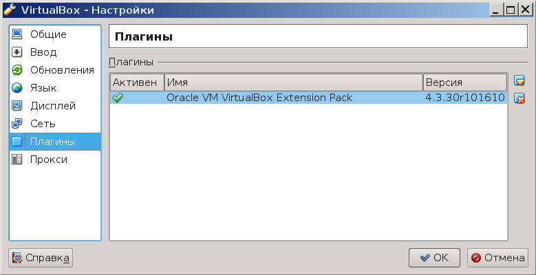

Компания Oracle с некоторых пор очень поверхностно относится к релизам VirtualBox. Не работает то одна функциональность, то другая.
Вот и в версии 4.3.30 я не смог стандартными средствами установить VirtualBox Extension Pack:
Because the USB 2.0 controller state is part of the saved VM state, the VM cannot be started. To fix this problem, either install the 'Oracle VM VirtualBox Extension Pack' or disable USB 2.0 support in the VM settings (VERR_NOT_FOUND).
Проблема оказалась в том, что установка расширения путем двойного клика по скачанному файлу расширения, как это написано в документации, запускалась, но требовала пароль. Причем неизвестно какой пароль, ибо о том какой конкретно пароль нужен, в запросной форме не сказано. Возможно, что пароль рута. Но ввод пароля рута приводил лишь к появлению сообщения о неправильном пароле.
Я пробовал ввести пароль текущего пользователя - результат тот же.
Я попробовал запустить VirtualBox от пользователя root, и в меню Файл-Настройки-Плагины нажать на кнопку "Добавить плагины" и выбрать скачанный файл. Но это приводило только к сегфолту (дистрибутив Debian 8).
Совсем уже отчаявшись установить столь нужный мне плагин, я закопался в документацию, и обнаружил, что есть еще одна возможность - установить плагин из командной строки. Вот что для этого нужно сделать.
Вначале необходимо получить сам файл расширения (плагина). Для версии 4.3.30 его можно получить командой:
wget http://download.virtualbox.org/virtualbox/4.3.30/Oracle_VM_VirtualBox_Extension_Pack-4.3.30-101610.vbox-extpack
или взять с официального сайта компании Oracle.
Далее надо переключиться на пользователя root командой su, или запустить команду установки плагина через sudo.
Находясь в каталоге с файлом плагина, надо дать команду (от рута):
VBoxManage extpack install Oracle_VM_VirtualBox_Extension_Pack-4.3.30-101610.vbox-extpack
В случае удачной инсталляции вывод будет следующим:
0%...10%...20%...30%...40%...50%...60%...70%...80%...90%...100%
Successfully installed "Oracle VM VirtualBox Extension Pack".
После чего, можно запустить VirtualBox, и в списке установленных плагинов будет виден плагин VirtualBox Extension Pack:
